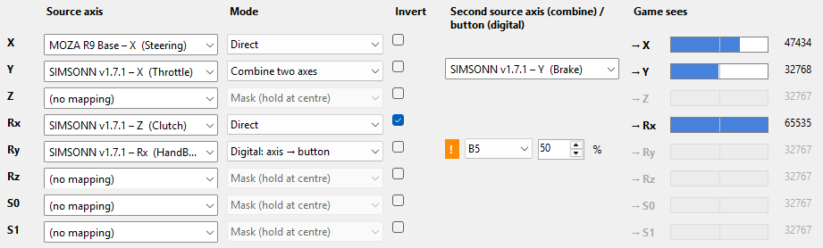
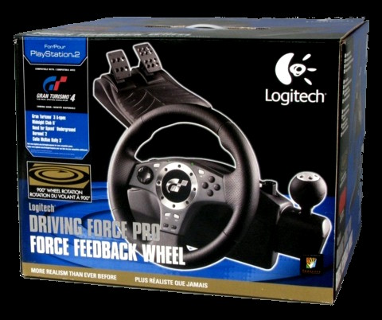
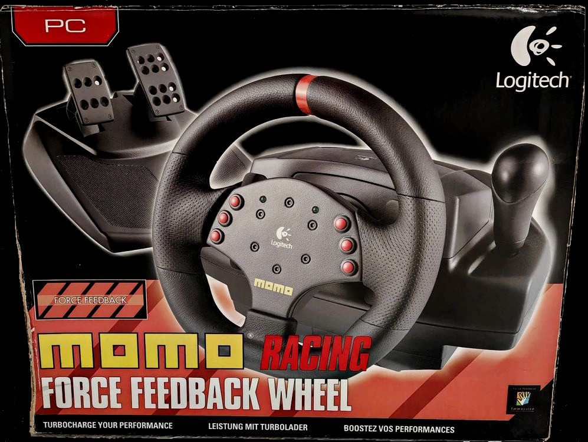
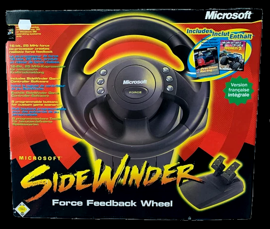

CtrlMuxr
Multiple Controllers → One Input
1. What CtrlMuxr is
Many older (and some newer) games can only use one controller. If you have a separate wheel, pedals and gear shifter, the game usually will not let you combine them: you pick the wheel in the game menu and the shifter stays unused.
CtrlMuxr merges your devices so that the game sees one controller with all the axes and buttons you need.
You also decide how the axes are converted (for example throttle and brake on one axis, or the brake on its own axis) and which buttons the game sees.
2. How it works
A game finds its controllers through Windows' DirectInput library (a DLL file). CtrlMuxr puts a small DLL of its own in the game's folder, called the proxy here. The game loads it in place of Windows' own DLL, and the proxy does three things:
- Reads your real devices (two or more, e.g. wheel, pedals, shifter, handbrake, buttonbox; up to 9 devices in all).
- Adds them to the main device (the wheel) according to your settings: their axes and buttons become axes and buttons of the wheel, so the game sees one controller.
- Shows the game only the main device (the other devices are hidden from it). Force feedback (FFB) still goes to the wheel. You choose the main device in Add game… (section 3, step 1).
The settings live in the game folder in dinput_proxy.ini. The app writes it, and a running game picks up most changes in about half a second. Only some settings (for example hidden devices and [Caps]) need a game restart.
3. Quick start
- Step 1 – Add game… (bottom left): pick the game's .exe. The app detects how the game reads controllers and installs the right proxy. Choose your wheel, the controller with force feedback (FFB): the game sees only this one, and the other controllers (pedals, shifter) are hidden from the game and merged into it. The choice cannot be changed later in the app: to use another controller, uninstall the proxy with its settings (Uninstall proxy…, then Remove from list and answer Yes) and add the game again.
- Step 2 – Devices tab: press a button and name it, move an axis and name it (e.g. THROTTLE, BRAKE, CLUTCH, HANDBRAKE, GEAR UP). The names can be anything and show on the other tabs.
- Step 3 – Virtual device tab: choose a Ready-made layout and press Apply layout, or choose a Source axis by hand for each axis the game sees (X, Y, Z…). A good start: wheel on X, throttle on Y, brake on Z, clutch on Rx (all Direct). Unused axes: (no mapping). If your names do not tell the throttle and the brake, the app asks which axis is which. The Game sees bars show the result even without the game (preview).
- Buttons tab: press Map the buttons you have named, with the same numbers. The gear buttons and the others become buttons of the wheel. Only connected devices are included: a device whose names are remembered but which is not connected now (and is not already used by this game) is skipped, and the message names it. A game button can have several source buttons: it is pressed when any of them is.
- If the game is running, changes are saved at once. Otherwise they are a draft until you press Save.
- Start the game and map the controls in the game's own menu. Press every pedal and button when the game asks.
- Close the game and press Analyse last session…. The button glows orange when the log shows something worth looking at. It reports what it found and suggests what to try if something did not map.
- If the game is 32-bit and force feedback is missing: run Exclusive access test… (see section 6).
The app also has a Getting started guide with the same steps. It stays visible until you have saved for the first time (Hide this guide hides it).
4. The tabs
- Devices
- All connected controllers live: axes as bars with values, the button grid (green = pressed). Here you name axes and buttons: move an axis or press a button and type a name for it in the field next to it. It also shows which axis moved last.
- Virtual device
- The axes of the controller the game sees (X, Y, Z, Rx, Ry, Rz, S0, S1, on the left of each row) and their Source axis. The Game sees part (→ X and the bar) shows what the game gets: the real value while the game runs, otherwise a preview calculated from your devices with the same rules as the proxy (the Tuning option "lead" is not included). A grey row = the axis stays at the centre (no mapping, Mask or Digital). A Ready-made layout fills the table: the named axes straight through (the default), a combined pedal axis or separate half axes; then press Apply layout. The layout finds the throttle, brake, clutch and handbrake from the axis names (e.g. throttle, gas, brake, brk); if the names are not recognised, it asks which axis is which. If the game needs a particular wheel (Logitech, MOMO, SideWinder), choose it as the Identity on the Advanced tab.
- Buttons
- Buttons of other devices as buttons of the game: Source button → Game button (B1, B2, …, B32, up to 48 rows; the number of rows shown can be set to 8, 16, 32 or 48 for the game you are editing; the next game starts at 8, or more if its rows need them). A game button can have several sources (e.g. gear up from two buttons): it is pressed when any of them is.
The source list shows only as many buttons as the device has (at most 32, the most the proxy reads); the buttons you have named and the ones already mapped are always listed, and the switch Only buttons I have named shortens the list to them. A device that is not connected is shown in red with "(not connected)": its settings can still be edited, but the game gets no values from it until it is plugged in (press Refresh on the Devices tab). The Game sees box on the right turns green while the game button is pressed. An axis that works as a button (handbrake) is made on the Virtual device tab with Mode Digital. Clear all empties the table (the Digital axes on the Virtual device tab stay).A game button that is the target of a row (or of a Digital axis) gets its value only from its sources: the wheel's own button with the same number no longer reaches the game. A wheel button that is not mapped anywhere passes through to the game as it is. To keep a wheel button working too, add a row with the wheel's own button as an extra source (e.g. Moza B2 → B2).
A small orange ! appears when a Buttons row and a Digital axis use the same game button. - Tuning
- How one axis feels: dead zone (dz), curve (expo), gain, anti-deadzone (adz), lag cancel (lead) and the centre point. Each row has a Reset button.
- Advanced
- Settings for games that do not behave normally: button count limit (MaxButtons), hiding capability flags (ClearFlags), ignoring the game's own dead zone, the exclusive-access fallback, strength sent as magnitude (GainAsMagnitude), force feedback strength (Boost), the identity the wheel reports (Logitech) and the device type. These are fixes for problem situations: if the game works, change nothing. Each setting has a short explanation, and the ? (hover or click) opens a longer one and tells whether the setting takes effect at once or needs a game restart.
- INI (text)
- The settings file as it is. Edit by hand if you know what you are doing.
- Log
- The proxy's log of a game session. You can scroll it while the game runs: it does not jump to the end if you have scrolled up.
Buttons on the left: Add game…, Help (F1), Uninstall proxy… (removes the proxy from the game folder; the settings stay stored; when the proxy is not there the button is Install proxy…) and Remove from list. In the top bar: Saves and backups…, Exclusive access test… and Undo last save.
5. Axis modes
| Mode | What it does | Use when |
|---|---|---|
| Direct | The source is passed on as it is. Pedal: rest = minimum, fully pressed = maximum. | The game accepts a single pedal axis. Start here. |
| Half axis + | Rest in the centre, fully pressed = maximum. | The game reads an axis minimum as "pressed", or you want each pedal on its own axis. |
| Half axis − | Rest in the centre, fully pressed = minimum. | As above, in the other direction. |
| Split: upper / lower half | The upper or lower half of the source is stretched to the full range. | One centred axis (e.g. a combined pedal axis) is to be split in two. Not for separate pedal axes. |
| Combine two axes | Throttle and brake on one axis: throttle pulls towards the minimum, brake towards the maximum, rest in the centre. | The game expects a single pedal axis ("Logitech style"). |
| Mask (hold at centre) | The game always gets the centre value. Same as choosing (no mapping). | Unused or static axes of a device that would otherwise look "pressed" to the game. |
| Digital: axis → button | The axis works as a button: pressed when the axis passes the point you choose. | Handbrake, when an old game does not take it as an axis. |
Invert reverses the direction. In Combine two axes it swaps the throttle and brake halves as a whole (the pedals cannot be reversed one by one). A masked axis does not move in the game's menu, so mask only when everything else is mapped.
Example: wheel, pedals and shifter as one controller

- X – Steering straight to the game's axis X.
- Y – Brake and throttle axes combined on the game's axis Y (Combine two axes).
- Z – The game's axis Z is hidden (Mask): the game always gets the centre value from it.
- Rx – Clutch axis reversed on the game's axis Rx (Invert ticked).
- Ry – Handbrake axis turned into a digital button B5 for the game (Digital: axis → button; the button is pressed when the axis passes 50 %).
An orange exclamation mark means that button B5 is already mapped to another function on the Buttons tab.
Making the game see a known wheel (Identity)
Some games only know certain wheels and give them proper default controls. On the Advanced tab you can make your wheel report itself as a Logitech Driving Force Pro, a Logitech MOMO Racing or a Microsoft SideWinder Force Feedback Wheel. This changes only the name and ID the game sees: the axes (Virtual device tab) and the buttons (Buttons tab) stay as you set them, and you can limit the button count with MaxButtons. Identity and MaxButtons need a game restart.
The Driving Force Pro ID is a guess; the MOMO Racing ID (046D:CA03) was read from a real wheel and the SideWinder ID (045E:0034) comes from a hardware database (one report). Not every game accepts them.
The wheel models on the Identity list (box pictures):



6. If the game does not accept a controller or an axis
An axis or button does not map in the game's menu although the log shows the values moving? Try in this order (Analyse last session… suggests the same):
- Another game axis. Move the pedal to a different axis (e.g. Z → Rx). Some games do not take a certain axis for a certain job.
- Another Mode. Direct ↔ Half axis +.
- A combined pedal axis for throttle and brake (Combine).
- Handbrake as a button (Digital) if the game does not take it as an analogue axis.
- Button number. Try another number. Low numbers generally work better than high ones. Avoid the buttons the wheel itself has: give the mapped buttons numbers the wheel does not use.
- If nothing helps:
[Caps] MaxButtons=12andClearFlags=Aon the INI tab.
"This game cannot be handled automatically"
Add game… looks at which controller interface the game program imports and picks the proxy DLL to match:
| The game uses | Proxy used |
|---|---|
DirectInput 1–7 (DINPUT.dll) | dinput.dll |
DirectInput 8 (DINPUT8.dll) | dinput8.dll |
only winmm (joyGetPosEx), and the game also imports DINPUT.dll or MSACM32.dll | dinput.dll or msacm32.dll |
If the game imports none of these, the app reports that it cannot handle the game automatically. The most common case is an old game that reads the joystick through winmm only and loads neither DINPUT.dll nor MSACM32.dll: the proxy has no way to get loaded, so such a game is not supported. Some versions of the same game differ: a patched version may use DirectInput where the original uses only winmm. Controller input done in the game's own DLL files (an engine DLL) is detected too, if the DLL is in the game folder.
No force feedback, or the wheel pulls to one side
If the wheel pulls to one side with full force (for example in the Colin McRae Rally games right at the start of a stage or after a crash), try the Advanced tab switch Strength as magnitude (GainAsMagnitude) and restart the game. Some wheels (e.g. the Moza R9) ignore gain changes of an effect that is already playing, and the switch sends the strength as the magnitude. If the pull is still uneven (stronger to one side), also try Block the sine effect (BlockSine). In Colin McRae Rally (Moza R9) it clearly improved the symmetry of the forces; the price is that the engine and road vibration disappear. For the rest, see below.
If the game's force feedback (FFB) does not work, run Exclusive access test… first. Once, a running Steam client stopped 32-bit games from getting the wheel exclusively; closing Steam completely fixed it. The cause was not found and the block has not recurred: later tests with Steam running gave exclusive access both with Steam Input off and with it on for generic, Xbox and Switch Pro controllers. If the test fails and Steam is running, first turn off Steam → Settings → Controller → Advanced Settings → Enable Steam Input for …; if that is not enough, close Steam completely from the background (tray icon → Exit) and test again.
Note: Steam can change how controllers behave: Steam Input can remap, emulate or take over controllers, also per game. If a game launched from Steam acts oddly with the controller, check Steam → Settings → Controller and the game's Properties → Controller. The exclusive access tests gave the same result with these settings on and off.
Reading the log
The Log tab (and dinput_<number>.log in the game folder) shows what the proxy did during a game session. The lines worth looking at:
Config: …– the settings the proxy read when the game started (hidden devices, FFB options, mappings, identity). If a line you expect is missing, the setting was not read: some need a game restart.Loaded real …\dinput.dllandDirectInputCreateA ver=700– the proxy loaded Windows' own library and the game asked for DirectInput (700 = version 7, 500 = version 5).winmm IAT hooks in game module: joyGetPosEx=1– for a game that reads the joystick through winmm: 1 means the proxy attached to that call, 0 means it did not.Enum: … -> hidden from game– the devices the game was not shown. Your wheel should be listed without that mark.SetDataFormat … dataSize=80– how the game wants the controller data (80 = the common format, 272 = the larger one with 128 buttons).SetPropertylines show the axis range and dead zone the game set.GetCapabilities … FFB=yes– whether the wheel reports force feedback, and how many buttons the game was told (for example128 -> 8when MaxButtons limits it).CreateEffect– the game created force-feedback effects. No such lines in a game that should have FFB points to missing exclusive access.- The proxy writes an
Acquireline only when the result changes; repeats are counted ((repeated 500 more times)). Ifhr=80070005appears for a short while andhr=0follows, the game window was probably not in the foreground (e.g. Alt+Tab); the analysis then only gives a short note.Acquire … hr=0means the game got the device; other values are not always errors, because games try several times.hr=80070005(a hexadecimal error code) means access was denied: run Exclusive access test…. Lines withfallback levelorupgrade levelshow the proxy switching to a gentler access mode and trying exclusive access again (the AutoCoop fallback on the Advanced tab).
When the proxy logs. The proxy logs only while CtrlMuxr is running, so a finished setup does not slow the game down. Start CtrlMuxr before the game, or the first lines (Config:, CreateDevice) are missing. To log a game without CtrlMuxr, turn on Log also when CtrlMuxr is closed (the checkbox under Analyse last session…) for it. Problems (failed calls, a controller that is not found, a bad INI line) are always kept: in the log, or, when logging is off, in dinput_errors.log in the game folder (at most 256 kB). A game that calls something very often is logged at most about 200 lines a second; the log then says (N lines left out: more than 200 per second). Lines starting with ERROR are the problems; when a problem ends (a device comes back, Acquire works again) that is kept too.
The Analyse last session… window reads the same log and summarises it; use the log yourself when the analysis finds nothing.
What the analysis can and cannot tell
The log and the Analyse window show what the proxy gave the game. They cannot see what the game accepted, so the questions in the window ("accepted / not accepted") are part of the analysis.
7. Where the files are
| Place | Contents |
|---|---|
| Game folder | The proxy DLL (dinput.dll, dinput8.dll or msacm32.dll), the working copy dinput_proxy.ini and the logs dinput_*.log. |
App data\games\<game>\ | The master copy of the settings, automatic backups (the 5 newest) and own saves. They stay even if the game folder is cleaned. |
App data\proxy\ | The proxy DLLs (x86 and x64), from which Add game copies the right one to the game folder. |
App devices.ini, games.ini, settings.ini | Your names, the game list and the app settings (language, start guide). |
Synchronisation: the copy in the game folder and the one in the app are kept equal. If only one changed, it wins. If both changed, the newer wins and the other is saved as a backup. Nothing is replaced without a backup.
Updating the proxy: if the app warns that the proxy file in the game folder is a different version from the app's own, press the Update proxy button next to the warning (the game must be closed). The settings are not changed.
Removing the proxy: Uninstall proxy… deletes the DLL and the working copy from the game folder and puts back the game's own DLL if the installer saved one. The settings stay in the app. While the game is still on the list, the same button becomes Install proxy…: it puts the proxy back and restores the latest settings. Remove from list removes the game from the list (Delete also deletes the stored settings, Keep keeps them; if you add the game again with the same name they come back). A folder that is already on the list is not added a second time; a settings file found in a folder that is not on the list is used with the main device it was made for.
Saves and backups
Saves and backups… (top bar) lists the earlier states of the game's settings: automatic backups (the app makes them itself before changes and keeps the 5 newest) and own saves (you name and save them yourself; they stay until you delete them). Select one to see what restoring it would change compared with now. A restore works like any other edit: for a running game it is saved at once, otherwise it stays a draft until you press Save, and once saved it can be taken back with Undo last save. Each press steps back one save (the number in brackets shows how many are left, up to 30); the saves are remembered only until you switch game or close the app, so use the automatic backups for anything older. When something works, save it there as an own save (a named copy of a working state). If you switch to another game while you have an unsaved draft, the app asks whether to save, discard or cancel.
8. Glossary
- Proxy
- A small DLL that CtrlMuxr installs in the game's folder. It sits between the game and Windows' DirectInput: it reads your real devices and gives the game one virtual controller. It does not change the game or Windows.
- DLL
- A program file (library) that programs load. A DLL in the game folder is loaded before Windows' own.
- DirectInput / winmm
- Two ways Windows lets games read controllers. The app detects which one the game uses and installs the right proxy.
- INI
- A settings file in text form (
dinput_proxy.ini). - Axis
- A continuous value (wheel angle, pedal). The virtual controller has eight: X, Y, Z, Rx, Ry, Rz, S0, S1.
- Mask
- An axis whose value the game always gets as the centre value. Hides a device's unneeded axes.
- Half axis
- A pedal whose rest position is in the centre of the axis.
- Split / Combine
- Splitting one axis into two / merging two axes into one.
- Digital
- An axis that works as a button once it passes a threshold (%).
- Own deadzone (dz)
- The centre area where small movements are ignored.
- Curve / expo
- Softens the response around the centre.
- Gain
- Output multiplier (100 % = unchanged).
- Anti-deadzone (adz)
- Cancels the game's own dead zone.
- Lag cancel (lead)
- Cancels the game's input smoothing (sluggish feel).
- Centre point
- The raw value the game takes as the middle (usually 32768).
- Preview
- What Game sees shows while the game is not running: the app calculates the result from your devices with the same rules as the proxy.
- FFB
- Force Feedback: the forces the game sends to the wheel.
- Exclusive access
- The game's way of reserving the controller for itself. FFB requires it.
- Hexadecimal (hex)
- A number system with the digits 0–9 and A–F, where A = 10 and F = 15. The app shows some numbers in hex: device IDs (VID:PID, e.g.
346E:0002), error codes in the log (80070005) and theClearFlagsvalue (A= 10). Type them as shown, in hex. - Own save
- A named copy of a game's settings that you can return to later.